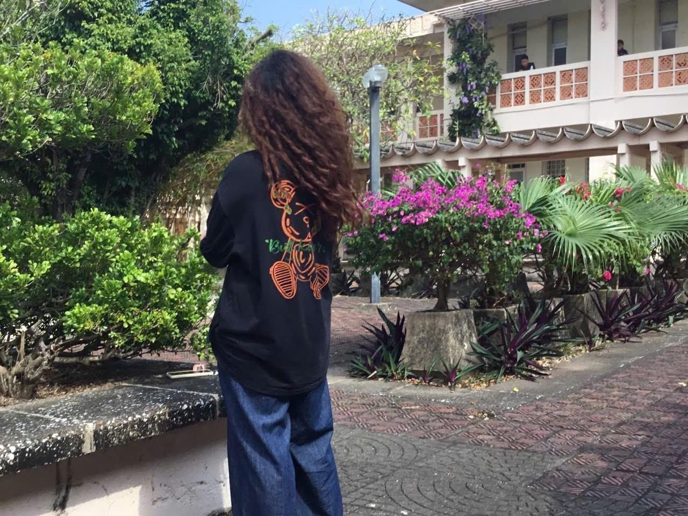
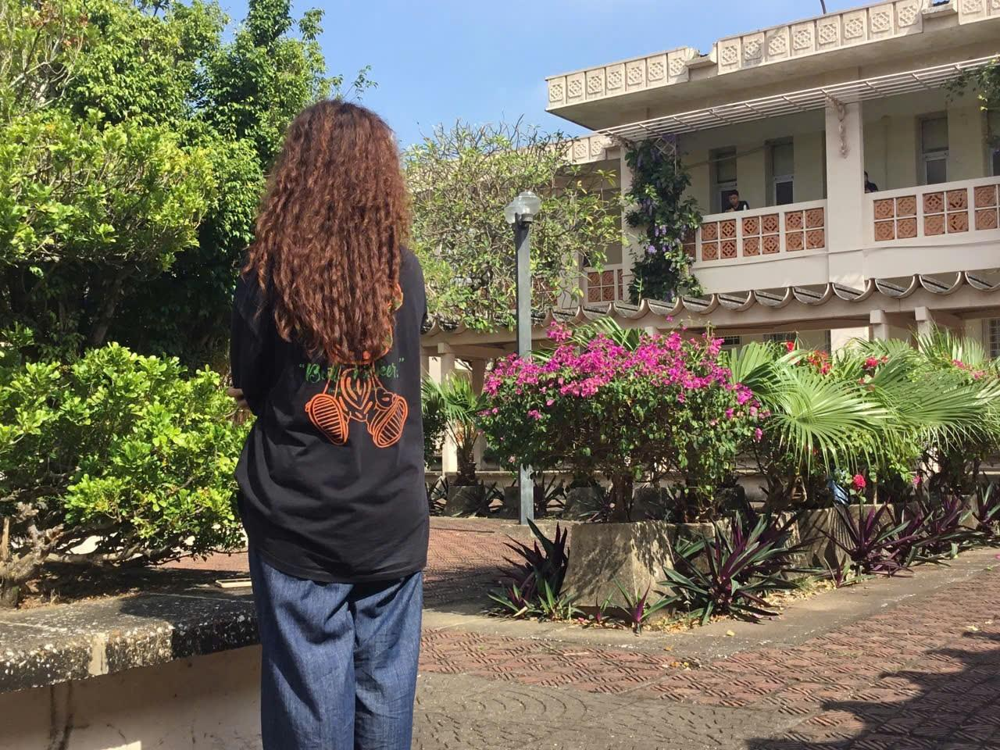
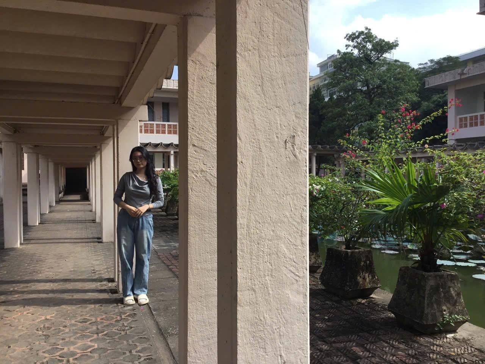

Class 6 Group 1 practical workshop: Side-by-side visual comparisons of 5 common photography errors and practice video workspace.
As part of the Journalism & Media curriculum at the Faculty of English Language and Culture (ULIS - VNU), Class 6 Group 1 conducted a field photography and videography workshop to develop practical journalistic visual skills, diagnose common technical mistakes, and demonstrate intuitive side-by-side solutions.
Workshop Assignment Information
Production Team: Class 6 Group 1 • Credits: Photo and Video by Group 1 • Topic: Fundamental Photography Errors, Fixes & Practice Video.
I. Common Photography Errors and Corrections
Below is a detailed analysis of the 5 most prevalent field photography errors along with intuitive Before / After comparison pairs:
1. Motion Blur / Camera Shake
Occurs when shooting on the move or when the shutter speed is too slow to freeze motion.

Before (Error)Photo 1.1: Shaky, blurred image.
Both subject and background suffer from motion ghosting due to unsteady handholding.

After (Corrected)Photo 1.2: Crisp, sharp image without blur.
Steady dual-hand grip and faster shutter speed lock every detail with crystal clarity.
2. Out of Focus (Defocus)
Camera sensor locks focus onto background structures or foreground leaves instead of the primary subject.
Before (Error)
Photo 2.1: Out of focus subject.
The subject's face is fuzzy because autofocus anchored onto the wall and trellis behind.
 After (Corrected)
After (Corrected)Photo 2.2: Pin-sharp focus on the subject.
Accurately locked eye-AF on the portrait, rendering creamy bokeh in the background.
3. Exposure / Brightness
Balancing light intake to preserve shadow details and avoid harsh clipped highlights.
Before (Error)
Photo 3.1: Severely underexposed image.
The scene is drowned in darkness, losing vibrant hues on the mural and shadow details.
After (Corrected)
Photo 3.2: Perfectly balanced exposure.
Colors of the 'Fly Beyond Languages' mural wing and model face glow with natural vibrancy.
4. Rule of Thirds
Aligning key subjects along the grid intersections to establish visual balance and narrative leading lines.

Before (Error)Photo 4.1: Incorrect rule of thirds.
A massive pillar obstructs the frame center, cramming the subject into an awkward left sliver.
After (Corrected)
Photo 4.2: Masterful rule of thirds framing.
Subject sits precisely on the right third line, creating leading corridor perspective.
5. Lighting Direction (Backlit vs Frontlit)
Directing natural sunlight onto the subject to accentuate facial expressions rather than plunging into harsh shadows.
Before (Error)
Photo 5.1: Harsh counter-light error.
Direct counter-sunlight turns the subject into an unintentional black silhouette.
After (Corrected)
Photo 5.2: True lighting direction.
Repositioning angle facing natural light reveals warm, radiant facial features and vivid depth.
II. Practice Video Showcase
Below is the practical video showcase produced by Class 6 Group 1. The documentary footage recording field reporting workflows, subject interviews, and technical camera operations has been integrated below for instructors and readers to view directly:
FULL HDProduction: Field Photography & Video Techniques Showcase • Class 6 Group 1
This practical workshop empowers students to not only master technical camera parameters but also build rigorous foundations for high-standard journalistic storytelling.
Article Link: "
Photo & Video Practical Workshop: Analyzing 5 Common Photography Errors & Practice Video",
Class 6 Group 1 & Hearticles, by Class 6 Group 1, November 19, 2026
/hearticles/photoandvideopractice


Reader Discussion (0)
Be the first to share your heartfelt thoughts on this story.